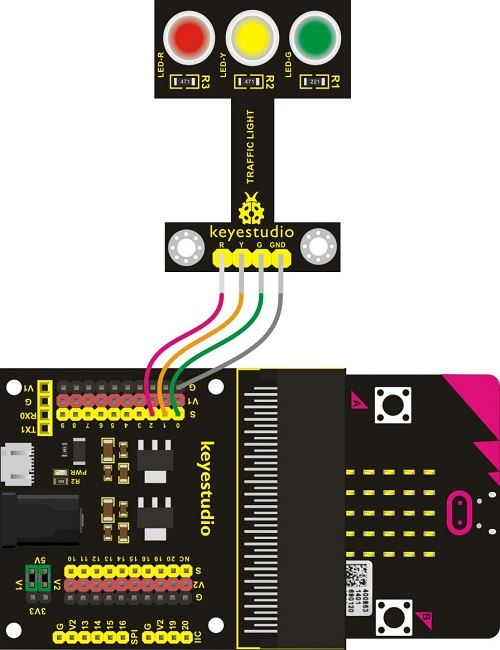

Piny II: Semafor
Programujeme v micro:bit Python Editoru. Budeme ovládat modul semaforu a naprogramujeme skutečný semafor pro auta.
Potřebné součásti
- samozřejmě micro:bit
- rozšiřující deska
- modul semaforu (Keyestudio Traffic Light)
- propojovací vodiče (drátky) ×4
Zapojení modulu semaforu k micro:bitu
Modul semaforu má čtyři vývody: R (červená), Y (žlutá), G (zelená) a GND (zem). Drátky zapojte takto:
| Vývod semaforu | Barva vodiče (drátku) | Pin na desce |
|---|---|---|
| R (červená) | růžový | P2 (S) |
| Y (žlutá) | oranžový | P1 (S) |
| G (zelená) | zelený | P0 (S) |
| GND (zem) | šedý | G (zem) |

Úlohy
Úloha 1: Český semafor
Naprogramujte semafor tak, aby fungoval jako skutečný semafor pro auta:
- svítí červená 5 sekund,
- svítí žlutá 1 sekundu (příprava na jízdu),
- svítí zelená 5 sekund,
- svítí žlutá 1 sekundu (pozor, bude červená),
- vše opakujeme stále.
svítí: červená
zbývá 5 s
pin2 = 1, pin1 = 0, pin0 = 0
Semafor běží v nekonečné smyčce a po poslední žluté začne znovu červenou.
Nápověda
Každá barva je jeden pin: červená P2, žlutá P1, zelená P0. Hodnota 1 LED rozsvítí, hodnota 0 ji zhasne. Pro zapnutí a vypnutí použijte write_digital. Pauzu uděláte příkazem sleep(ms).
from microbit import *
while True:
pin2.write_digital(1) # červená svítí
sleep(5000)
pin2.write_digital(0) # červená zhasne
... # žlutá 1 s
... # zelená 5 s
... # žlutá 1 sPokud by LED svítily jinak, než čekáte, na začátek programu přidejte display.off(). Na starších micro:bitech sdílí displej piny se semaforem.